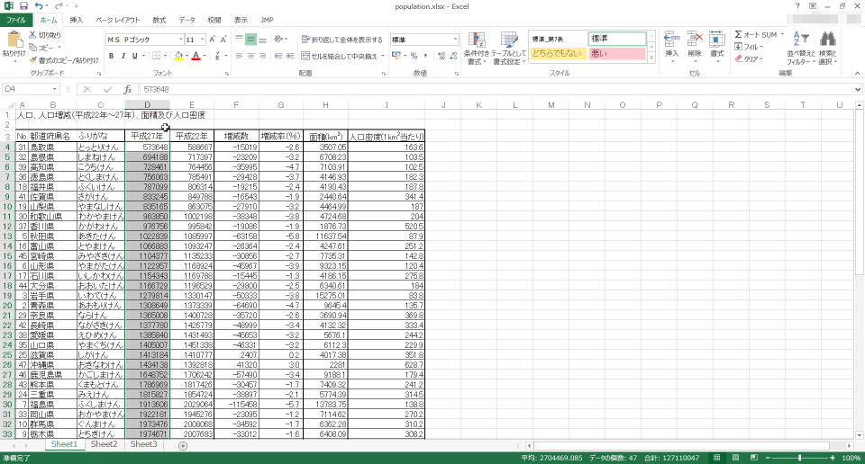
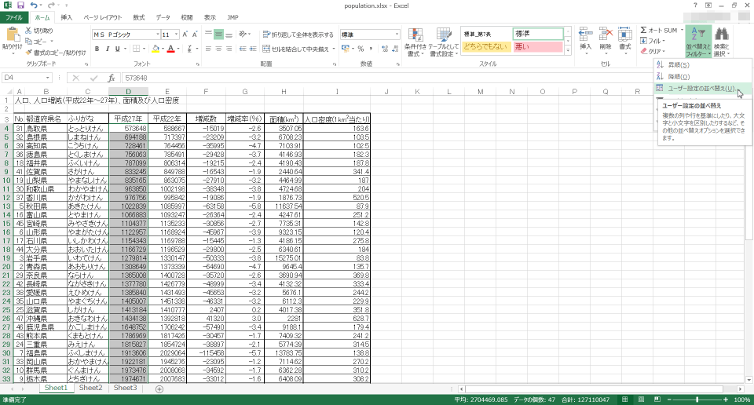
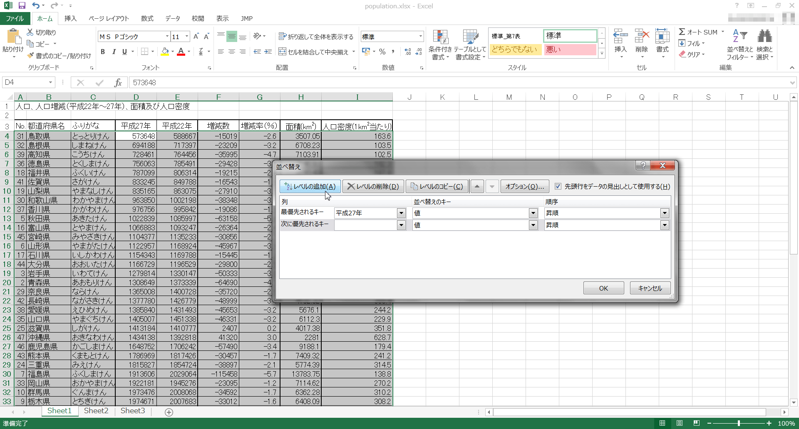
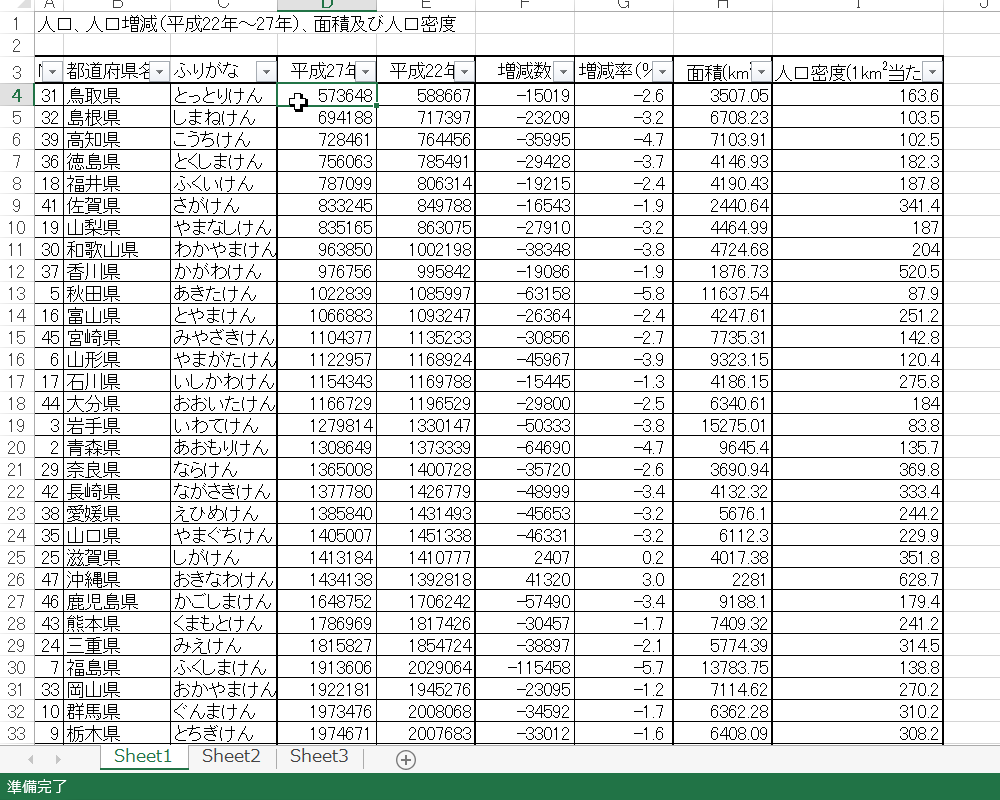
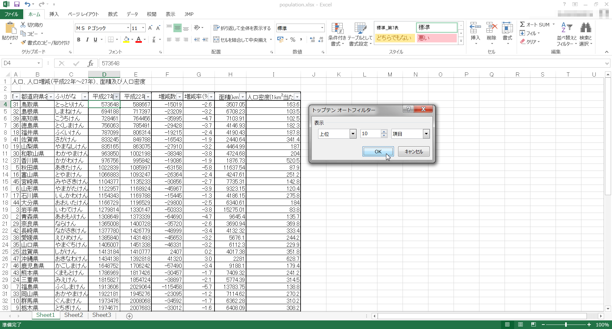
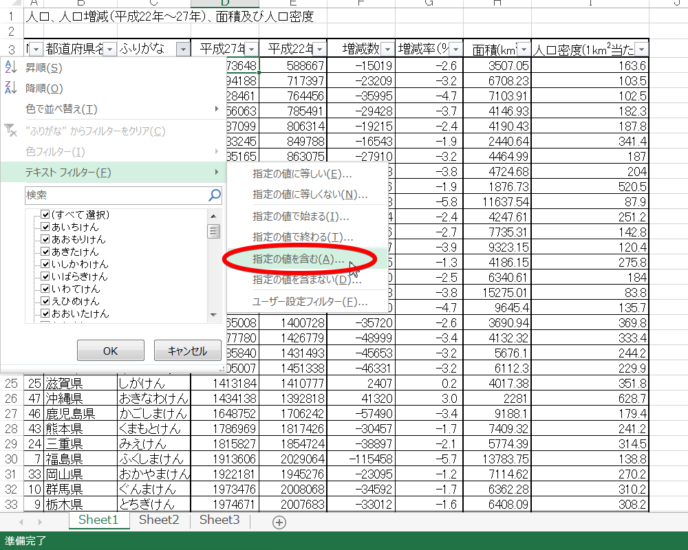
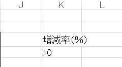
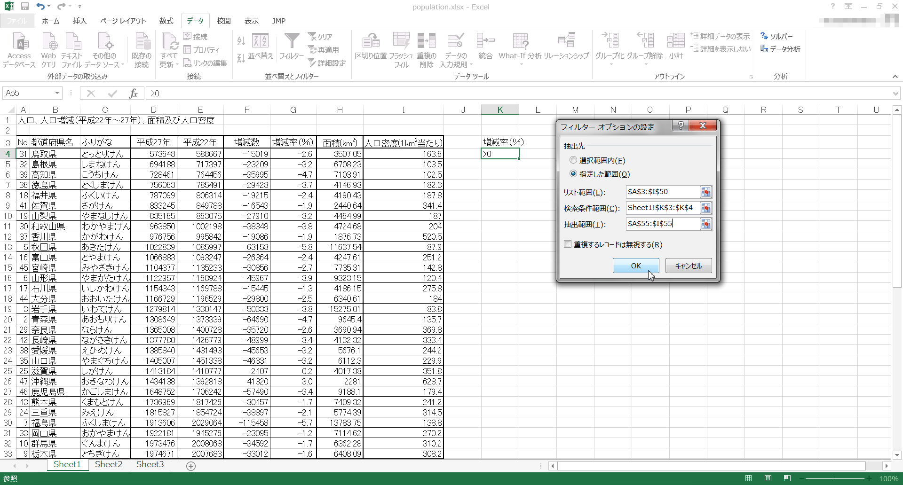

がつきました。クリックしてみましょう。
がつきました。クリックしてみましょう。layout: page title: 表計算ソフトによるデータ処理（３） date: 2015-03-23 16:50:50 +0900 purposes:
Excelにはデータベースとしての機能もあります。その中の、ソートとフィルタについて説明します。
以下では、統計表 を用いて説明します。元のデータは、平成22年度の国勢調査です。
データの並び替えを行います。
並べ替える基準になるセルを選択します。そして[ホーム]リボン - [編集]タブ - [並び替えとフィルタ]をクリックします。 その後、[昇順]もしくは[降順]をクリックして、並び替えを行います。
"並び替えの前に"ウィンドウが表示されたら、[選択範囲を拡張する]を選択し、[並び替え]を押します。
並び替えが行われました。
文字列以外にも、数値を並び替えることも出来ます。下の例は、"平成22年"を昇順で並び替えたものです。

さらに複雑な並び替えをする場合、こちらの方法を用います。
まず、[ホーム]リボン - [編集]タブ - [並び替えとフィルタ] - [ユーザー設定の並び替え]をクリックします。

すると、以下のようなウィンドウが開きます。
ここでは、複数の条件の並べ替えを行うことが出来ます。[レベルの追加]をクリックして、新たに条件キーを追加してみましょう。

条件キーは上から順番に適用されていきます。 また、[並び替えオプション]をクリックすると、さらにいろいろなオプションを指定することができます。
Excelには、フィルタというデータを抽出する機能があります。
まず、表内の適当なセルを選択後、[ホーム]リボン - [編集]タブ - [並び替えとフィルタ] - [フィルタ]をクリックしましょう。

このフィルタは[ホーム]リボン - [編集]タブ - [並び替えとフィルタ] - [フィルタ]を再度押すことで解除することができます。
フィールド名の行の一部が結合されていたり、同じ名前のフィールドがあるとうまくいかないことがあります。
各フィールド名に がつきました。クリックしてみましょう。
出てきたメニューで要素を抽出したり、並び替えを行うことが出来ます。 ここでは、試しに[数値フィルタ] - [トップテン]をクリックしてみましょう。
"トップテン オートフィルタ"ダイアログが出てきます。各項目を適切に設定して、[OK]をクリックしましょう。

すると、条件にあうレコードのみ表示されます。 これだけでは見にくいので、さらに降順に並び替えをするとよいでしょう。 また、元に戻したいときは、"すべて"をクリックします。 [ホーム]リボン - [編集]タブ - [並び替えとフィルタ] - [クリア]でもできます。
次に、テキストでの検索を行ってみます。 [テキストフィルタ] - [指定の値を含む]をクリックしてみましょう。

このように、さらに複雑な条件での抽出ができます。
また、? や * のワイルドカードも使用できます。
上の例では、条件を "を含む" から "と等しい" に変えて、*しま* と入力しました。
これはさきほどのものと全く同じ意味です。[OK]をクリックします。
すると、県名に "しま" が含まれるもののみ抽出されました。
さらに、条件を表で指定することもできます。 まず、以下の表を適当な場所に作成しましょう。 今回は "K3" と "K4" に入力してみます。

次に、[データ]リボン - [並び替えとフィルタ]タブ - [詳細設定]をクリックします。
[リスト範囲]は既に正しく選択されていることを確認してください。 [検索条件範囲]に、先ほど作成した表を指定しましょう。

[抽出先]を[選択範囲内]のままにすると、今まで同様、条件に合わない部分が非表示になった表となります。 [指定した範囲]を選択すると、下の"抽出範囲"がアクティブになります。 これを使うと、条件にあうレコードのみの新しい表が作成されます。 "抽出範囲"には、新たに表を作成したい範囲を指定します。
今回は A55:I55 に表を作成してみます。
とても便利な機能です。覚えておきましょう。
この他にも、ピボットテーブルやVBAといったものもあります。興味がある人は調べてみましょう。